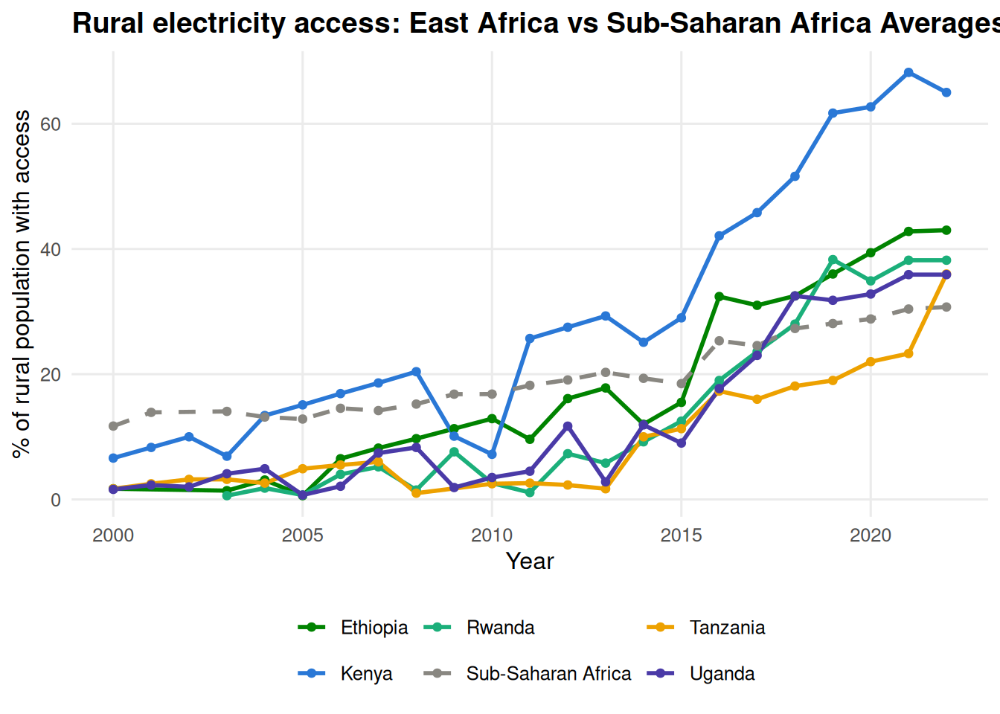
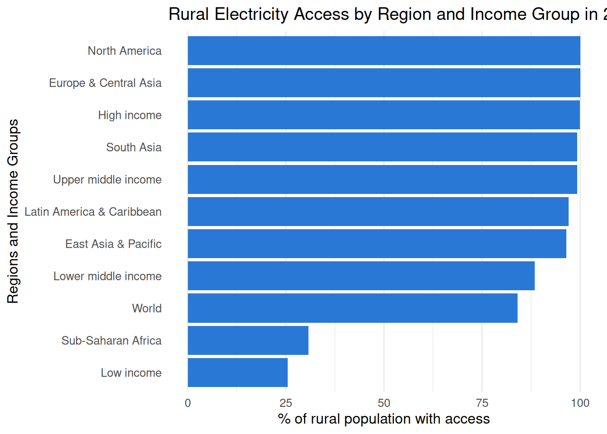

![]()
library(tidyverse)
library(dplyr)
library(ggplot2)
library(gt)
my_project_data <- read_csv(
here::here("data/raw/Access_to_Electricity_Rural.csv"),
skip = 4)
countries_meta <- read_csv(
here::here("data/raw/Metadata_country.csv"))My Capstone Project
Introduction
My project is on rural electrification in the world and the data is the percentage of rural access, taken from 1960 to 2025(Populated years from 1990-2023). The data is from the world bank and it contains the different countries and their codes with the indicator names and their codes and the years the data was captured.
Methods
Compiled from nationally representative household survey data, and occasionally census data, from sources going back as far as 1990 by the world bank Global Electrification Database (GED) The data is initially in wide format with one country per row and one year per column
Reading the Data
we use the skip = 4 to skip the four metadata lines that appear above the actual column headers
Data Exploration Approach
Initial Data Tidying
We reshape the data to long format using pivot_longer() and we filter out the non numeric columns. We also filter out the non numeric data in the regions.
tidy_data <- my_project_data |>
pivot_longer(
cols = `1960`:`2025`,
names_to = "year",
values_to = "access_rural_pct") |>
mutate(year = as.integer(year)) |>
filter(!is.na(access_rural_pct))
tidy_countries <- tidy_data |>
left_join(countries_meta, by = "Country Code") |>
filter(!is.na(Region))
write_csv(tidy_data, here::here("data/processed/tidy_data.csv"))
tidy_data <- tidy_data |>
mutate(`Country Name` = str_trim(`Country Name`))Results
To focus on the East African Region (Uganda, Kenya, Tanzania, Ethiopia and Rwanda). Rural Electrification in the region was minimal to bumpy before 2000 upto mid-2000s where we see a signifcant take-off. Uganda saw meagre rural electrification prior to 2000 with below 2% of the population having access. There we tiny increaments in access after 2000, between 2000 and 2018, there were fluctuations recorded in access, with more significant rises recorded from 2018 to 2023. Kenya went from 7% in 2000 to 65% in 2022, they enjoyed more steaper increments in access across the whole region. Tanzania has a similar case with Uganda with insignicifant increments in access till around 2012 where access started to shoot up significantly through to 2022. Ethiopia shows gradual increase in access between 2004 and 2012 before experiencing more gradient increase in access post 2014. Signficant %access increase in Rwanda is recorded post 2010 having barely had any rural access prior to 2008.
Initial Data Exploration
head(tidy_data)# A tibble: 6 × 7
`Country Name` `Country Code` `Indicator Name` `Indicator Code` ...71 year
<chr> <chr> <chr> <chr> <lgl> <int>
1 Aruba ABW Access to electric… EG.ELC.ACCS.RU.… NA 1990
2 Aruba ABW Access to electric… EG.ELC.ACCS.RU.… NA 1991
3 Aruba ABW Access to electric… EG.ELC.ACCS.RU.… NA 1992
4 Aruba ABW Access to electric… EG.ELC.ACCS.RU.… NA 1993
5 Aruba ABW Access to electric… EG.ELC.ACCS.RU.… NA 1994
6 Aruba ABW Access to electric… EG.ELC.ACCS.RU.… NA 1995
# ℹ 1 more variable: access_rural_pct <dbl>dim(tidy_data)[1] 7451 7tidy_data |>
group_by(`year`) |>
summarise(mean = mean(access_rural_pct),
median = median(access_rural_pct),
sd = sd(access_rural_pct))# A tibble: 34 × 4
year mean median sd
<int> <dbl> <dbl> <dbl>
1 1990 95.0 100 16.0
2 1991 89.3 100 24.9
3 1992 84.5 100 28.8
4 1993 80.7 100 31.3
5 1994 78.8 100 32.8
6 1995 77.3 100 33.6
7 1996 75.7 100 34.6
8 1997 76.9 100 33.3
9 1998 75.4 99.5 33.8
10 1999 75.0 98.9 33.9
# ℹ 24 more rowstidy_data_yr_2022 <- tidy_data|>
filter(year == 2022)Data Visualization
Figure 1 is a plot of % rural electrification access in East Africa vs Sub-Saharan Africa Averages from 2000-2022. It shows how access has grown in the region over the last 22 years with a mix of bumps and gradual increase in access.
countries_of_interest <- c("Kenya", "Ethiopia", "Rwanda", "Tanzania",
"Uganda", "Sub-Saharan Africa")
plot_data <- tidy_data |>
filter(`Country Name` %in% countries_of_interest,
year >= 2000, year <= 2022)
my_colors <- c(
"Kenya" = "#2a78d6",
"Ethiopia" = "#008300",
"Rwanda" = "#1baf7a",
"Tanzania" = "#eda100",
"Uganda" = "#4a3aa7",
"Sub-Saharan Africa" = "#898781")
my_linetypes <- c(
"Kenya" = "solid",
"Ethiopia" = "solid",
"Rwanda" = "solid",
"Tanzania" = "solid",
"Uganda" = "solid",
"Sub-Saharan Africa" = "dashed")
ggplot(plot_data, aes(x = year, y = access_rural_pct,
color = `Country Name`, linetype = `Country Name`)) +
geom_line(linewidth = 1) +
geom_point(size = 1.5) +
scale_color_manual(values = my_colors) +
scale_linetype_manual(
values = my_linetypes, guide = "none") +
labs(
title = "Rural electricity access: East Africa vs Sub-Saharan Africa Averages (2000-2022)",
x = "Year",
y = "% of rural population with access",
color = NULL
) +
theme_minimal(base_size = 12) +
theme(
legend.position = "bottom",
panel.grid.minor = element_blank(),
plot.title = element_text(face = "bold"))
ggsave(here::here("output/rural_electricity_trend.png"),
width = 8, height = 5, dpi = 300)
Figure 2 shows rural electricity access by region and income group, 2022. Notably, North America, Europe and Central Asia are doing wonderfully similar to High-income countries with Sub-Saharan Africa and Low-Income countries lagging behind.
region_data <- tidy_data |>
filter(
`Country Name` %in% c("North America", "Europe & Central Asia", "High income",
"Upper middle income", "South Asia",
"Latin America & Caribbean", "East Asia & Pacific",
"Lower middle income", "World",
"Sub-Saharan Africa", "Low income"),
year == 2022)
ggplot(region_data, aes(x = access_rural_pct,
y = fct_reorder(`Country Name`, access_rural_pct))) +
geom_col(fill = "#2a78d6") +
labs(title = "Rural Electricity Access by Region and Income Group in 2022",
x = "% of rural population with access",
y = "Regions and Income Groups"
) +
theme_minimal(base_size = 12) +
theme(panel.grid.major.y = element_blank())
Table 1 shows summary statistics for rural electrification Access in East Africa and Sub-Saharan Region, 2000 - 2022 with Kenya having the highest mean % and Maximum in the region and Tanzania statistics showing there is very slow and minimal access. The East African region is below the Sub-Saharan region averages bar Kenya.
summary_table <- plot_data |>
group_by(`Country Name`) |>
summarise(
Mean = mean(access_rural_pct, na.rm = TRUE),
Median = median(access_rural_pct, na.rm = TRUE),
SD = sd(access_rural_pct, na.rm = TRUE),
Min = min(access_rural_pct, na.rm = TRUE),
Max = max(access_rural_pct, na.rm = TRUE),
N = n()
) |>
arrange(desc(Mean))
summary_table |>
gt() |>
cols_label(
`Country Name` = "Country",
Mean = "Mean (%)",
Median = "Median (%)",
SD = "Std. dev.",
Min = "Min (%)",
Max = "Max (%)",
N = "Years"
) |>
fmt_number(columns = c(Mean, Median, SD, Min, Max), decimals = 1) |>
cols_align(align = "center", columns = c(Mean, Median, SD, Min, Max, N))| Country | Mean (%) | Median (%) | Std. dev. | Min (%) | Max (%) | Years |
|---|---|---|---|---|---|---|
| Kenya | 29.0 | 25.1 | 20.7 | 6.6 | 68.2 | 23 |
| Sub-Saharan Africa | 19.7 | 18.4 | 6.2 | 11.7 | 30.7 | 22 |
| Ethiopia | 18.3 | 12.9 | 14.4 | 0.6 | 43.0 | 21 |
| Rwanda | 14.0 | 7.4 | 14.2 | 0.6 | 38.3 | 20 |
| Uganda | 12.5 | 7.4 | 12.7 | 0.7 | 35.9 | 23 |
| Tanzania | 9.7 | 5.2 | 9.5 | 1.0 | 36.0 | 22 |
Conclusions
Rural electricity access rose globally from ~67% to ~84% between 2000 and 2022, but progress was highly uneven across regions.
East African countries (Kenya, Ethiopia, Rwanda) saw the largest gains, several multiplying access five- to twenty-fold from very low bases(see Figure 1). - Nigeria, despite a higher 2000 starting point, saw almost no sustained improvement and was overtaken by countries that started far behind it.
Sub-Saharan Africa and low-income countries overall lag significantly, with 40 countries still below 50% rural access in 2022.
Closing the remaining gap likely requires targeted national policy, not just general economic growth.
Summary of Findings
Since my reason for choosing rural electrification was to to see how the progress has been for rural Uganda where i come from, I tried to focus my visualizations on Uganda and East Africa. The trajectory of % access in uganda was generally underwhelming for the most part. In the last 5 years the government rolled out a Rural Electrification project so the next World Bank data post 2025 will surely and hopefully show a more exponential growth curve in access.